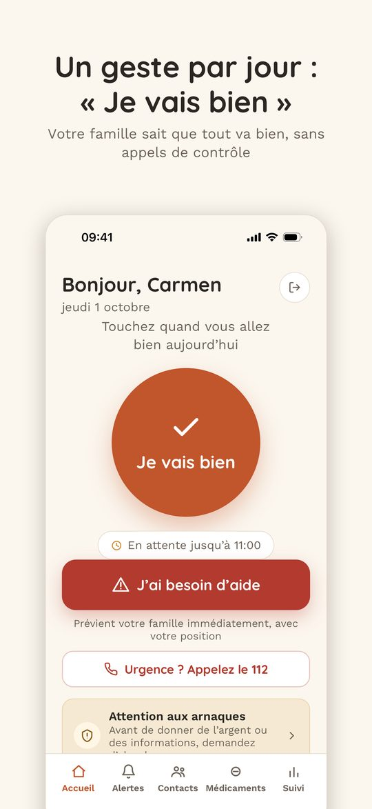
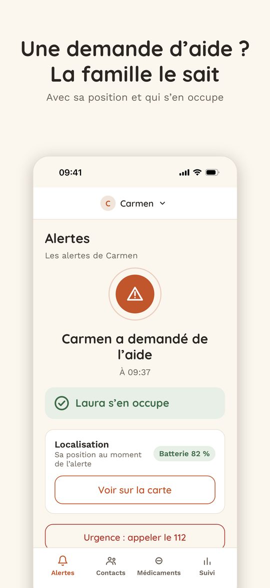
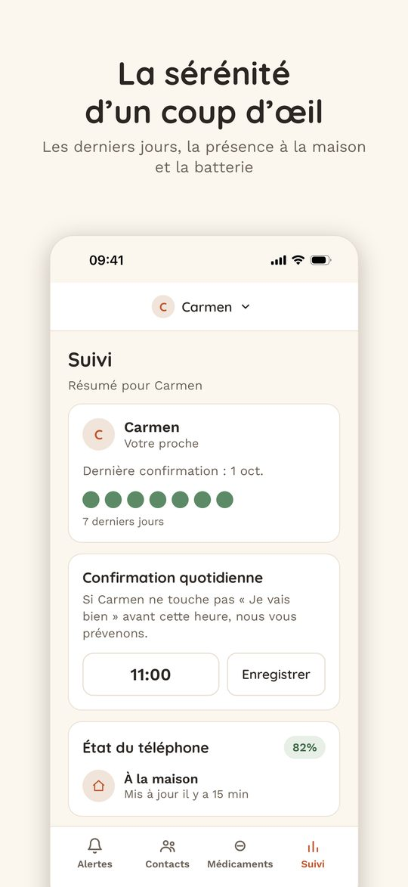

Un geste par jour pour dire « je vais bien » et un bouton d’aide qui prévient la famille immédiatement. L’indépendance pour vos parents, la tranquillité pour vous.
Télécharger sur l’App Store


Grands textes, grands boutons, écrans simples et connexion avec Face ID, sans mot de passe à retenir.
Notification immédiate à la famille, qui sonne même en mode silencieux si vous autorisez les alertes critiques. En cas de demande d’aide sans réponse, aussi par SMS.
SMS et appel automatique à chaque alerte, contacts de confiance illimités, rappels de médicaments, alerte anti-arnaque et suivi avec batterie et présence à la maison. Offre famille pour deux personnes.
La position n’est consultée que lorsque l’app est ouverte, jamais en arrière-plan. Pas de publicité, aucune vente de vos données.